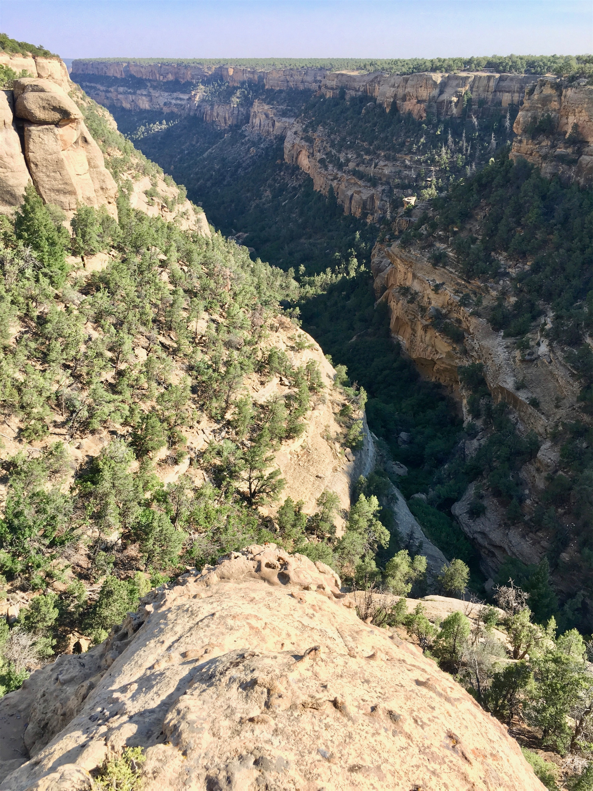
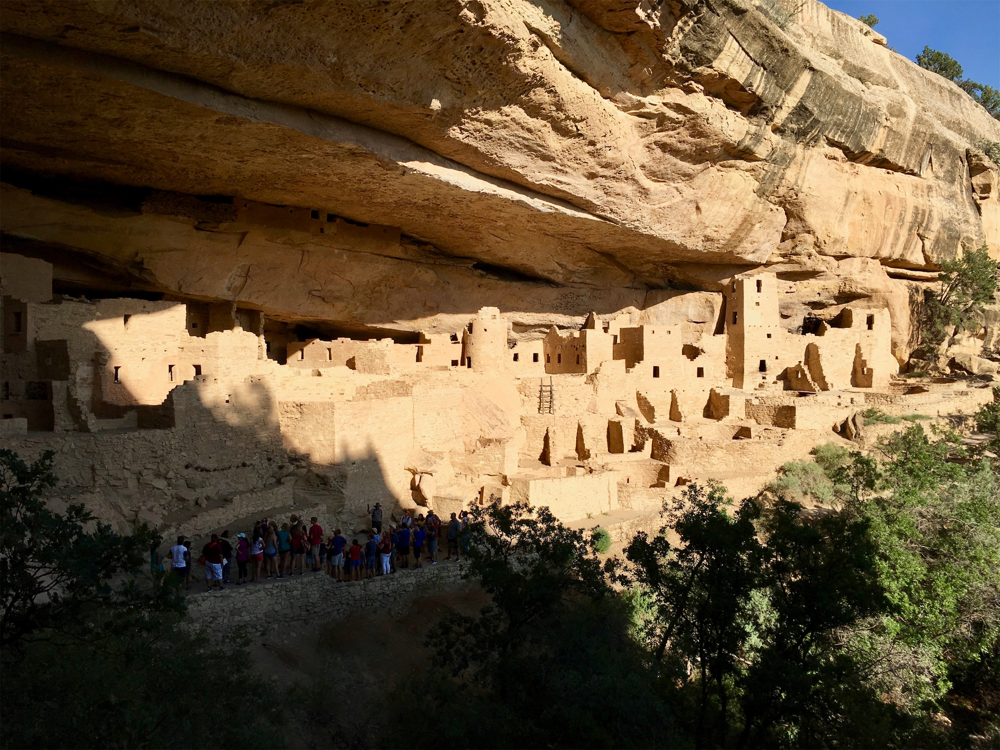
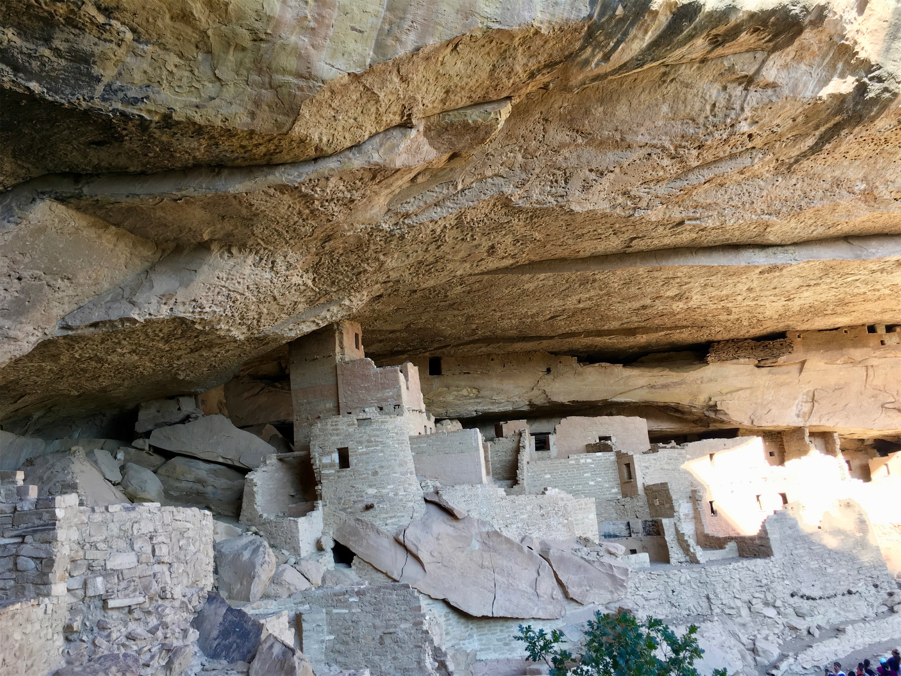
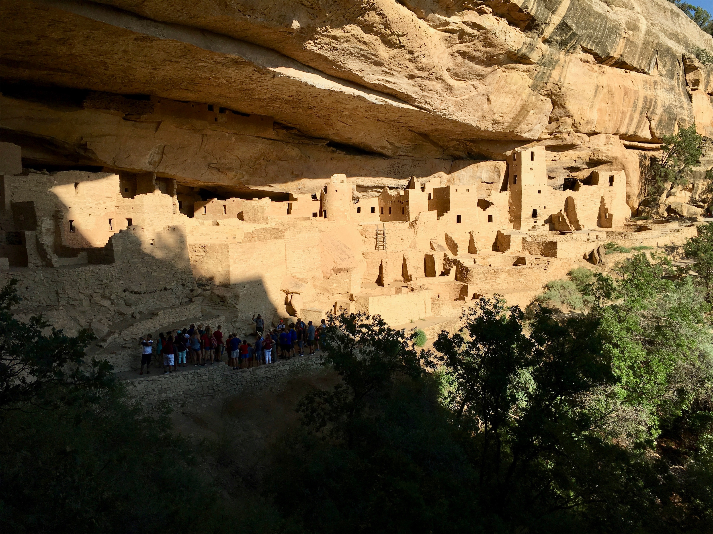
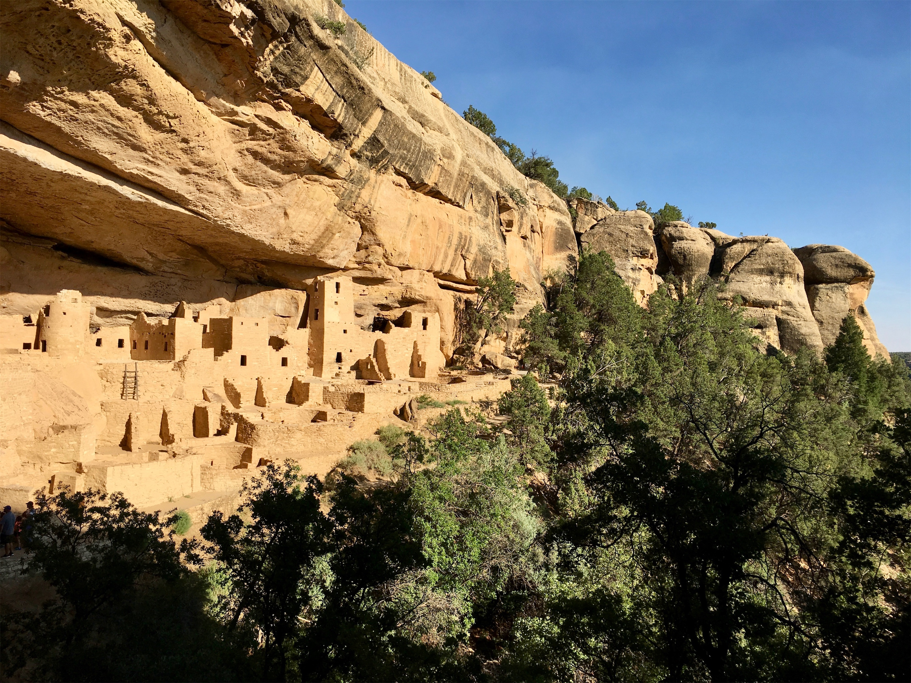
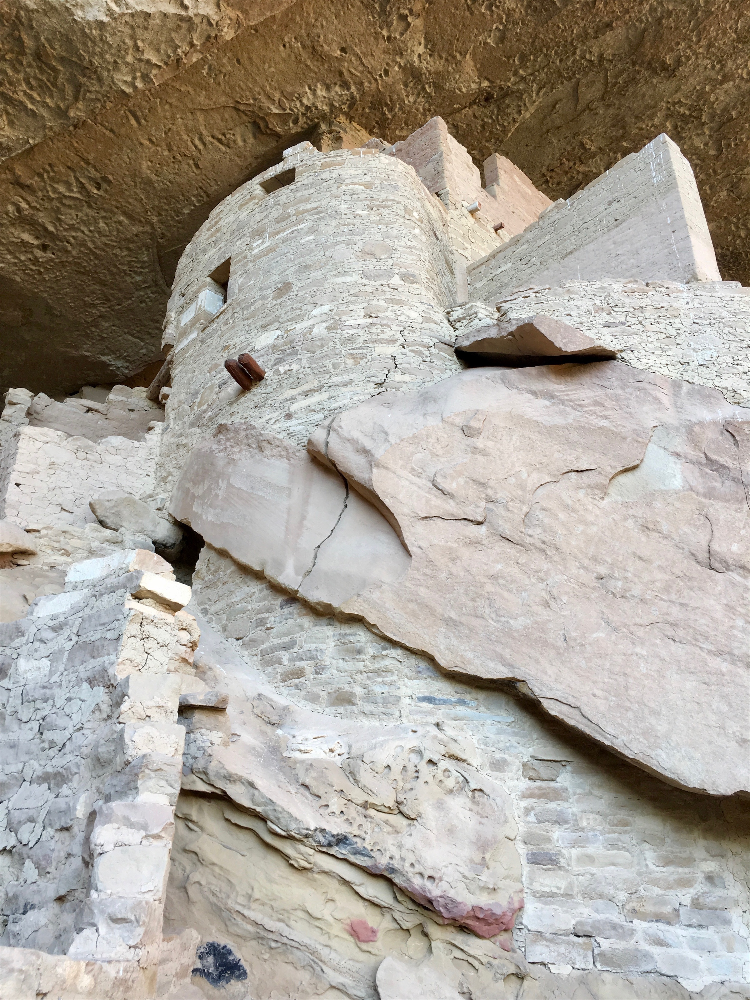
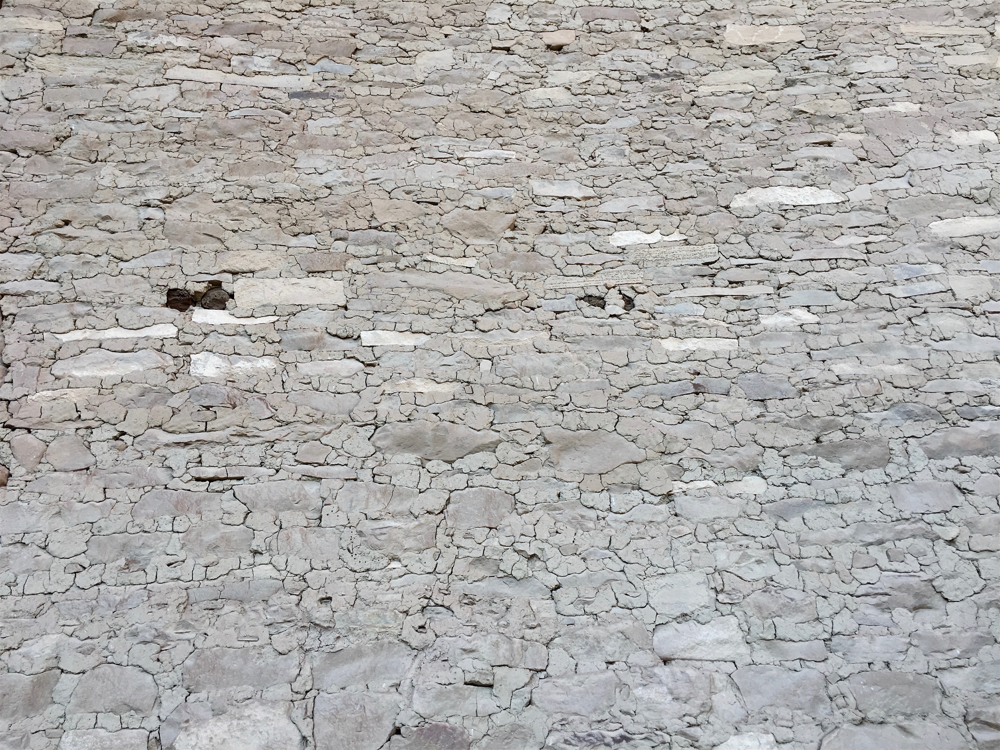
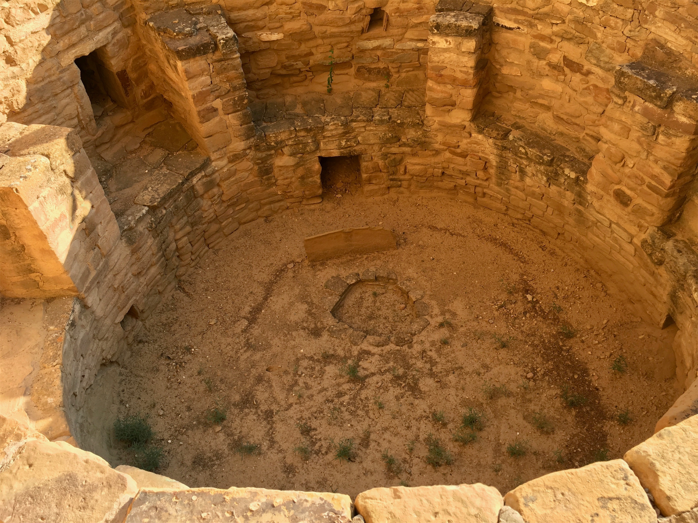
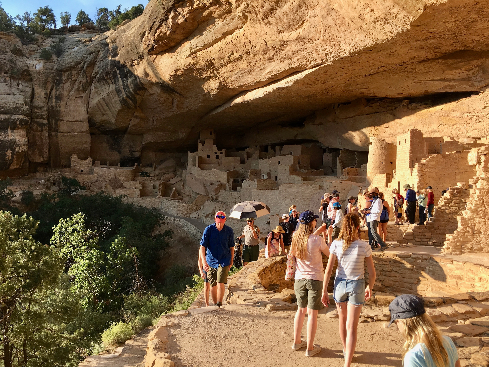

Monday, Jul 30, 2018, 12:56 PM MDT
Mesa Verde Visitor Center, Mancos, CO, United States
88°F Sunny
88°F Sunny
![]()
7/30 Moab, UT -> Mesa Verde Visitor Center, CO 128 mi, 3.5 hr
7/30 Mesa Verde Visitor Center -> Wetherill Mesa -> Mesa Verde Lodge, CO 42 mi, 2.25 hr
7/30 Mesa Verde Lodge, CO -> Cliff Palace (RT) 19 mi, 3.25 hr
Trip Total: 9,898 mi
As we headed south and east out of Moab, we left the fantastic state of Utah and entered southwestern Colorado, where the scenery almost instantly changed from desert to farmland, due to irrigation from the Dorlores River. We entered the park and drove up the Mesa, which had spectacular, but wildfire hazy, views of the plains 2,000 ft below, and remnants of too many wildfires to count.
This park is unusual because it isn’t all about the scenery, but mainly about the amazing stone cities that the ancient Pueblos built into the stone outcroppings at the top of the canyons. They lived there from about 1200 to 1300 AD, and left for an unknown reason. The highlight of this visit for Brad was taking the 1-hr tour of the Cliff Palace, which is the largest complex and contains 150 rooms and probably housed 100 people. It was the best $5 he ever spent! The tour is fairly physically demanding, with steep uneven stone stairways going down 100 feet, and ladders going back up through narrow passages between boulders. The ranger guide was terrific, trying to get the group of 50 to see the site through indigenous, rather than western, eyes. For example, westerners tend to view the square and round towers as defensive buildings, like castles, yet there is no evidence that they were under physical threat or experienced violence. Many buildings have mathematical significance to their construction. Unfortunately, this site was almost completely looted before it was protected by the government in the early 1900s.
We spent the night in the park, at Far View Lodge, and our room overlooked the hazy canyon below.









